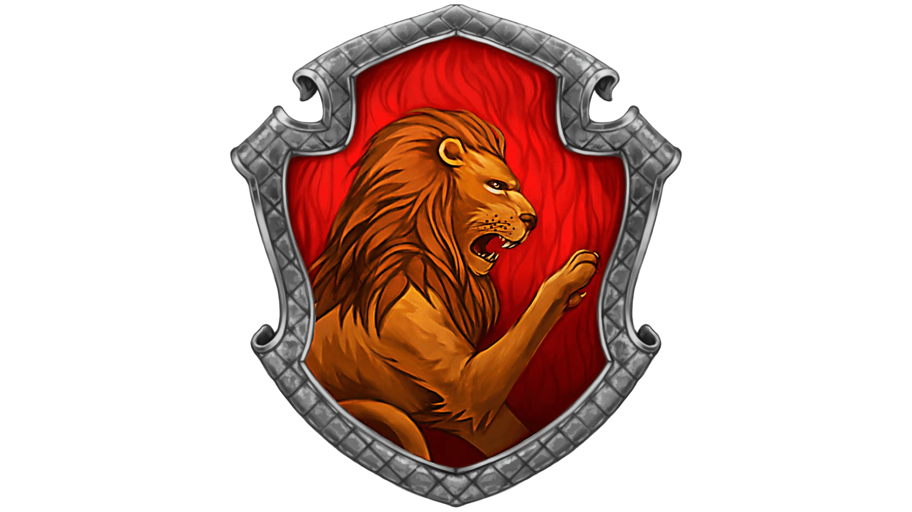
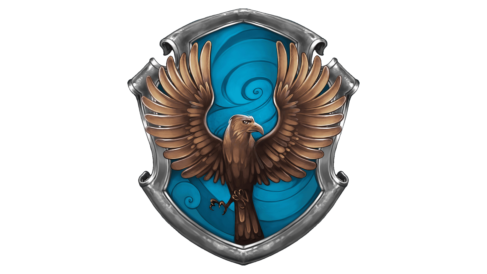

A Sonserina foi criada por Salazar Slytherin. Astúcia, sangue puro, determinação,
auto-preservação e ambição são qualidades de seus membros. Voldemort, Belatriz Lestrange, Lucius Malfoy, são
um dos membros da casa, que são comensais da morte mas, ser um integrante da casa, não é uma comprovação de
maldade. Como prova disso, temos: Merlin, Horácio Slughorn, Severus Snape e Draco Malfoy.

A casa de Grifinória foi criada por Godric Gryffindor e tem, como características
dos seus membros, a coragem, lealdade e companheirismo.
Os membros mais conhecidos da casa são: Alvo Dumbledore, Rubeos Hagrid, Minerva McGonagall, Ronald Weasley,
Hermione Granger e Harry Potter.

Corvinal:
Inteligencia, sabedoria, criatividade e vontade de aprender, são as características dos corvinos. Para a
fundadora da casa, Rowena Ravenclaw, a inteligencia além da medida é o maior tesouro do homem. Luna
Lovegood, Cho Chang, Garrick Olivaras são os membros conhecidos.
Lufa Lufa:
Considerada a casa mais menosprezada de Hogwarts, a lufa-lufa tem tanto valor quanto as outras casas.
Dedicação, paciencia, lealdade e honestidade fazem a reputação da casa, por ser mais inclusiva e aceitar
alunos não aceitos em outras casas. Newt Scamander, Cedrico Diggory e Ninfadora Tonks, são destaques.